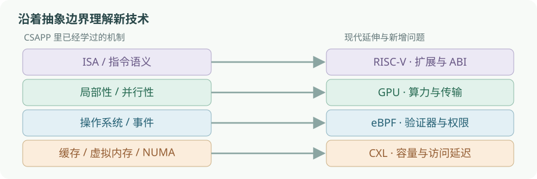
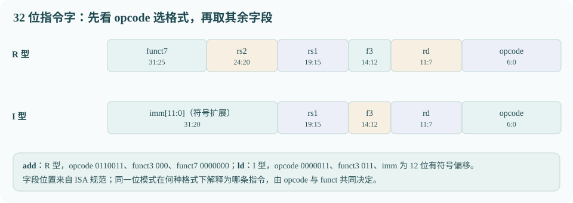

计算机系统 · 从抽象到新硬件 / 27
CPU、GPU、内核与内存，究竟是谁在移动数据？
现代系统的许多变化，都能用一条旧问题串起来：计算在哪里发生？数据从哪里来？谁保证访问有权限而且结果可见？ RISC-V、GPU、eBPF 和 CXL 并非同一种技术的四个品牌，而是从不同层级回答这三个问题。
本章聚焦机制与适用边界，不把指令集规范当作具体芯片的性能，不把硬件能力等同于所有操作系统都已自动启用。
27.1 先建立一张系统地图
先不要急着把这四种技术放在一张“谁更快”表里。它们分别工作在ISA、计算执行、内核执行环境、内存互联四个层次，优化目标和可观察指标不同。

| 技术 | 首先问什么？ | 常见误解 |
|---|---|---|
| RISC-V | 软件与硬件约定了哪些指令？ | 开放 ISA 自动等于高性能 CPU |
| GPU | 足够多的工作能否并行执行并复用数据？ | 计算核心多就能加速任意程序 |
| eBPF | 能否在受约束的内核钩子执行观测或处理逻辑？ | 验证器让任何内核代码都绝对安全 |
| CXL | 主机如何访问扩展或设备侧的内存？ | 远端内存必然像本地 DRAM 一样快 |
27.2 RISC-V：开放的是指令集规范，不是所有处理器设计
RISC-V 使用模块化的基础 ISA 与扩展。RV64I 表示 64 位基础整数指令集；常见的 M/A/F/D/C 等扩展分别涉及乘除法、原子操作、浮点及压缩编码（具体组合需查看目标配置）。运行软件还需要 ABI、特权架构、操作系统和设备生态配合。
# 示例：RV64I 风格汇编片段；寄存器初值由调用者提供
add a0, a1, a2 # a0 = a1 + a2（模 2^64 的寄存器结果）
ld t0, 0(a3) # 从 a3 地址读取 64 位（需满足访问/对齐约束）
# 只展示指令含义，不是独立可执行程序可以自由实现 RISC-V ISA，并不代表所有商业 SoC 或板级设计本身开源；同样，是否具备向量扩展、MMU 或特定缓存拓扑必须查具体芯片。ISA 描述可见行为，微架构决定如何实现流水线、乱序和分支预测，不能从前者推断频率或能耗。
27.3 GPU：并行计算常常先被数据移动限制
GPU 使用大量执行线程处理适合的数据并行任务；在 CUDA 编程模型中，host 代码发起内存操作与 kernel，device 线程按线程块执行。CPU↔GPU 传输、设备全局内存、共享内存和寄存器各有不同成本，数据局部性仍然重要。
交互：算术强度会把瓶颈移到哪里？
教学用 Roofline 模型：假设峰值算力 8 GFLOP/s，有效内存带宽 2 GB/s。可达到的理论上界为 min(8, 2 × I) GFLOP/s，其中 I 为每读写一字节所做的浮点运算次数。这不是任何 GPU 的实测值。
如果算法只读取巨大数组、每个元素做一次简单运算，数据移动很可能比乘加指令更贵。相反，矩阵乘法中的分块可增加片上复用。但 GPU 并非自动获胜：小工作量、复杂分支和频繁 host/device 传输，可能让启动与调度成本盖过收益。
27.4 eBPF：不改内核源码，也不能跳过内核安全边界
eBPF 通过加载器把程序附着到支持的钩子（例如 tracepoint、网络路径）上。验证器跟踪寄存器与指针状态，对访问边界、程序复杂度和辅助函数调用约束进行检查；受约束的循环在支持它的内核中可以通过验证，不能再笼统说“eBPF 不允许任何循环”。
/* eBPF 教学伪代码：缺少具体内核结构、map 声明与加载逻辑 */
on_sys_enter_read(ctx):
pid = current_pid()
counts[pid] += 1 // 实际 map 更新需考虑并发与原子性
return 0可观测性、流量处理与安全策略属于不同程序类型，允许的上下文、helper 和附着点各异。加载通常受内核版本、配置、权限及安全策略限制；即使有某个 capability，也不能保证任意系统上免特权加载所有程序。生产部署还需要评估开销、map 内存占用和恶意输入。
27.5 CXL：内存能被扩展，不代表延迟消失
Compute Express Link 定义建立在 PCIe 生态上的互联语义：CXL.io 承担设备发现/配置等 I/O 路径，CXL.cache 和 CXL.mem 支持各自方向的缓存一致性与设备内存访问模型。设备类型、协议版本和主机支持决定哪些路径实际可用。
支持 CXL 内存的 Linux 系统可能先将设备暴露为 DAX 区域，再经由内存热插拔进入页分配器；是否作为普通系统 RAM、是否形成 NUMA 节点、怎样进行放置与迁移，都取决于平台与配置。软件透明不是绝对保证：较高访问延迟、带宽、故障域与拓扑差异仍需测量。
把四种技术放回 CSAPP 的方法论
面对一个性能或正确性问题，先确定抽象边界：指令语义看 ISA，计算与传输看执行路径，内核钩子看 verifier 与权限，内存扩展看拓扑与访问成本。不要用“新技术必然更快”替代工作负载测量。
自测
一段代码的热点是顺序读取几十 GB 数据并对每个元素做一次加法。更换成 GPU、RISC-V 或 CXL 哪个一定能加速？
查看思路
没有一个能被无条件保证。首先估算算术强度与带宽，考虑传输和 NUMA 延迟，再选择适合的设备或布局；ISA 开放性本身不提供性能承诺。
资料与适用范围
RISC-V Unprivileged ISA · CUDA Programming Model · Linux eBPF Verifier · Linux CXL Driver。本文讨论的是机制，不代表任何硬件的基准结果。
把 Roofline 算式补上单位，才知道谁在限制性能
若设备在所研究的数据路径上可持续提供 2 GB/s 的数据带宽、该计算类型的峰值为 8 GFLOP/s，那么在计算强度 I = FLOP / byte 下，吞吐量上界是 min(8, 2 × I) GFLOP/s。这里的 2 和 8 都是假设参数，不是对任意 GPU 或 CPU 的测量。
| 计算强度 | 带宽上界 | 可用上界 | 初步判断 |
|---|---|---|---|
| 0.25 FLOP/byte | 0.5 GFLOP/s | 0.5 GFLOP/s | 带宽约束更紧 |
| 1 FLOP/byte | 2 GFLOP/s | 2 GFLOP/s | 带宽约束更紧 |
| 4 FLOP/byte | 8 GFLOP/s | 8 GFLOP/s | 两条理论上界相交 |
| 8 FLOP/byte | 16 GFLOP/s | 8 GFLOP/s | 计算峰值约束更紧 |
交点 I* = 8 / 2 = 4 FLOP/byte 来自单位约简。上界不是预测值：实际性能还会受到缓存、访存模式、分支、同步、占用率和实现细节影响；带宽必须对应所选的内存层级和数据流量定义。
技术深描 · 27 / ISA FIELDS
同一位模式为何能是不同指令？用字段解码验证 ISA 约定

“ISA 开放”容易被误读为“实现高性能”或“随便定义指令”。实际约束是：ISA 规定了软件与硬件都必须遵守的可见行为，包括指令字的字段划分。一次解码可以写成与位段无关的普通整数运算，因此可以用纯标准库验证。
| 字段 | 位范围 | 作用 |
|---|---|---|
opcode | 6:0 | 先由它确定使用哪种指令格式 |
rd | 11:7 | 目的寄存器号（5 位，编号 0–31） |
funct3 | 14:12 | 在同一格式内选择具体操作 |
rs1 | 19:15 | 第一个源寄存器号 |
rs2 / funct7 | 24:20 / 31:25 | R 型第二个源寄存器与操作选择（I 型的 31:20 改为 12 位立即数） |
python3 examples/deep-ch24-28-models.py 27该模型只使用整数移位与掩码，把 add x10,x11,x12 编码为 0x00C58533 并断言解码回相同的六字段；又把 ld x5,8(x6) 编码为 0x00833283 并断言 imm=8, rs1=6, rd=5, funct3=011, opcode=0000011；最后验证同一个 12 位字段在符号扩展后变成 -4。它检验的是编码约定，不代表任何微架构的指令吞吐或功耗。字段定义依据 RISC-V Unprivileged ISA。